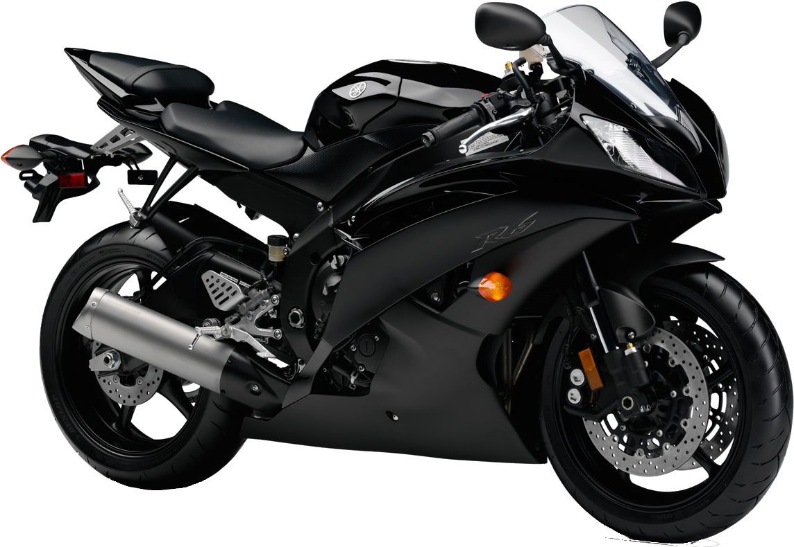

No início dos anos 1950, Genichi Kawakami, presidente da Nippon Gakki, precisava dar utilidade ao maquinário de metalurgia que havia sido usado durante a Segunda Guerra Mundial. A decisão foi entrar no crescente mercado de transporte individual.Em 1954, nasceu o primeiro protótipo de motocicleta, a YA-1. Apelidada de "Aka-tonbo" (Libélula Vermelha), a moto de 125cc e motor 2 tempos estreou vencendo duas das mais prestigiadas corridas do Japão no mesmo ano: a Corrida de Ascensão do Monte Fuji e o Festival de Asama. O sucesso imediato motivou a fundação oficial da Yamaha Motor Co., Ltd. em 1º de julho de 1955.
